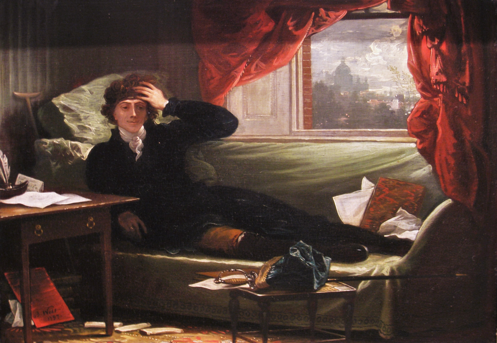
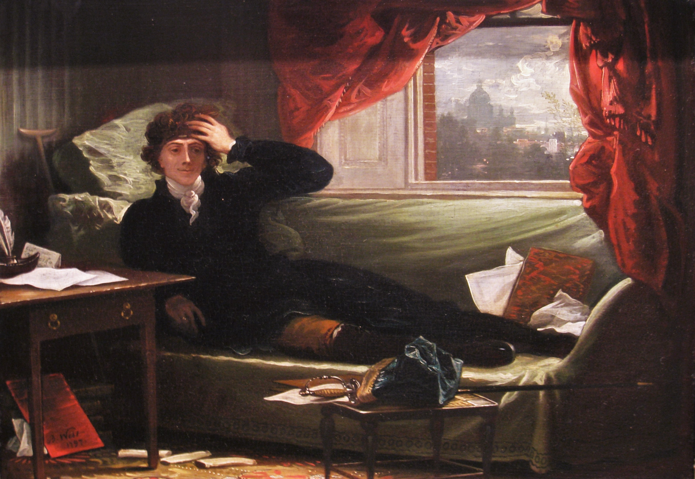

Тадеуш Анджей Бонавентура Костюшко родился 4 февраля 1746 года в шляхетской семье в имении Мерачёвщина, расположенном недалеко от местечка Косово (сегодня это территория Ивацевичского района Брестской области в Беларуси). Его семья принадлежала к шляхте среднего достатка, а родовое имение располагалось в регионе, который тогда входил в состав Речи Посполитой — федеративного государства Польши и Литвы. Отец Костюшко, Людвик, был военным и служил в польской армии, а мать, Теофиля Ратковская, происходила из знатного белорусского рода. С детства Тадеуш проявлял интерес к военному делу, инженерии и наукам, что позже определило всю его жизнь. Образование он получил сначала в Лицее в Люблине, а затем в Варшавской рыцарской школе, известной как Szkoła Rycerska — первом в Польше светском военном учебном заведении, ориентированном на воспитание патриотов и реформаторов. Здесь Костюшко проявил исключительные способности в математике, инженерии и военном деле. Благодаря королевской стипендии в 1765 году он продолжил обучение в Парижской военной академии, где углублённо изучал фортификацию, артиллерию и военную инженерию. В эти годы он познакомился с идеями Просвещения, которые во многом сформировали его мировоззрение: равенство, свобода и необходимость реформ. В 1776 году, вдохновлённый борьбой американских колоний за независимость, Костюшко отправился в Северную Америку, чтобы присоединиться к Войне за независимость США. В рядах армии Джорджа Вашингтона он быстро зарекомендовал себя как талантливый инженер-военный, отвечая за проектирование и строительство оборонительных сооружений. Наиболее значительным его достижением стало укрепление крепости Вест-Пойнт на реке Гудзон, ставшей ключевой для обороны американских сил и впоследствии штаб-квартирой Военной академии США.
Костюшко принимал участие в ряде важных сражений, включая битву при Саратоге (1777), которая ознаменовала поворотный момент в войне и способствовала вступлению Франции в конфликт на стороне американцев. За свои заслуги Конгресс США присвоил ему звание бригадного генерала Континентальной армии. Кроме того, Костюшко был убеждённым противником рабства — он завещал использовать своё жалование, полученное за службу в армии США, на освобождение и образование афроамериканских рабов, что было необычным проявлением гуманизма для того времени. После окончания войны Костюшко вернулся в Речь Посполитую, где страна переживала тяжёлый политический кризис из-за усиливающегося давления со стороны соседних держав — России, Пруссии и Австрии. Он активно поддерживал реформаторское движение, выступая за укрепление центральной власти и модернизацию государства. Костюшко стал сторонником Конституции 3 мая 1791 года — первой в Европе конституции нового типа, которая провозглашала демократические принципы и ограничение власти монарха. Однако разделы Польши в 1772, 1793 и 1795 годах нанесли тяжёлый удар по государственности Речи Посполитой. В ответ на усиливающееся вмешательство и подавление реформ в 1794 году Костюшко возглавил национальное восстание, которое получило его имя — Костюшковское восстание. В апреле 1794 года он был провозглашён верховным главнокомандующим вооружённых сил Польши и Литвы.
 

В ходе восстания Костюшко одержал важную победу в битве под Рацлавицами, где ему удалось объединить силы шляхты и крестьян — так называемых косиньеров, вооружённых косами. Это было редким примером того времени, когда классовые барьеры преодолевались ради общей цели — свободы и независимости. Несмотря на первоначальные успехи, восстание было подавлено, и в одной из последних битв, под Мацеёвицами, Костюшко был тяжело ранен и взят в плен российскими войсками. Он провёл в заключении около двух лет, содержась в строгом надзоре. После освобождения в 1796 году Костюшко отказался возвращаться на территорию, оккупированную Российской империей, и жил в основном во Франции и Швейцарии. Там он продолжал поддерживать идеи свободы, демократии и равенства, ведя переписку с политическими деятелями и реформаторами Европы и Америки. Он оставался активным участником общественной жизни, выступал за отмену крепостного права, равенство всех слоёв населения и защиту прав человека. Тадеуш Костюшко скончался 15 октября 1817 года в швейцарском городе Солёра. В 1818 году его прах был торжественно перевезён в Краков и захоронен на Вавельском холме — месте упокоения польских королей и национальных героев, что подчёркивает величие его исторической роли. Сегодня Костюшко считается национальным героем не только Польши и Литвы, но и Беларуси, а также Соединённых Штатов Америки, где он почитается как один из ключевых участников войны за независимость. Его имя носят высочайшая гора Австралии — гора Костюшко, многочисленные улицы и площади в разных странах мира, памятники и военные корабли. В Беларуси на его родине открыт музей, посвящённый жизни и деятельности великого патриота и борца за свободу.
Его девиз «За свободу вашу и нашу!» стал символом международной солидарности в борьбе за права и свободы всех народов. Костюшко был одним из первых европейских военных, открыто выступивших против рабства и социальной несправедливости, что сделало его не только выдающимся военным лидером, но и гуманистом, жившим идеалами Просвещения. Тадеуш Костюшко — это живой пример того, как преданность идеалам свободы, справедливости и равенства способна изменить ход истории и вдохновлять поколения по всему миру.